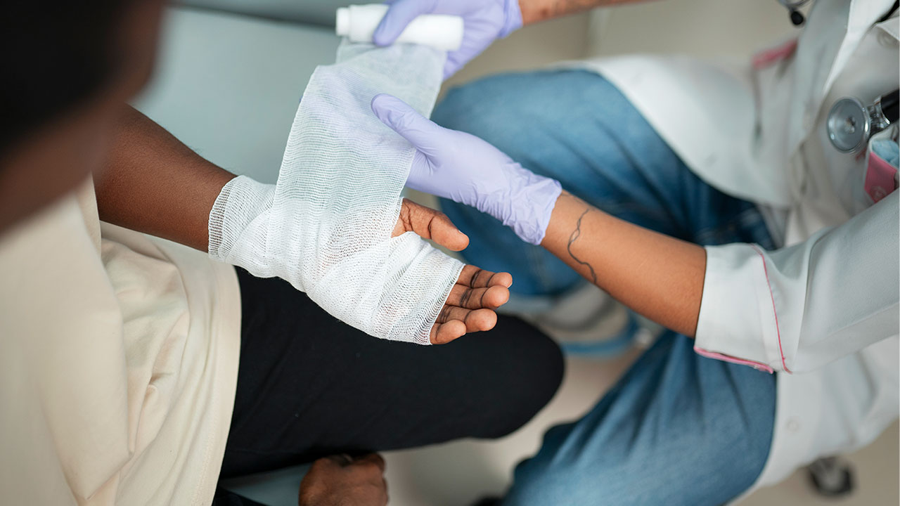
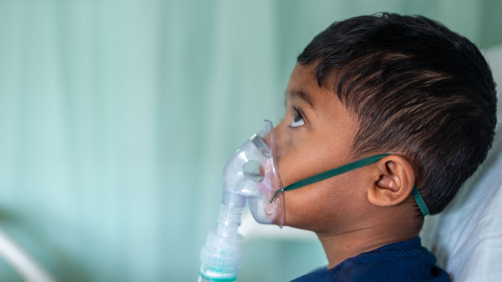
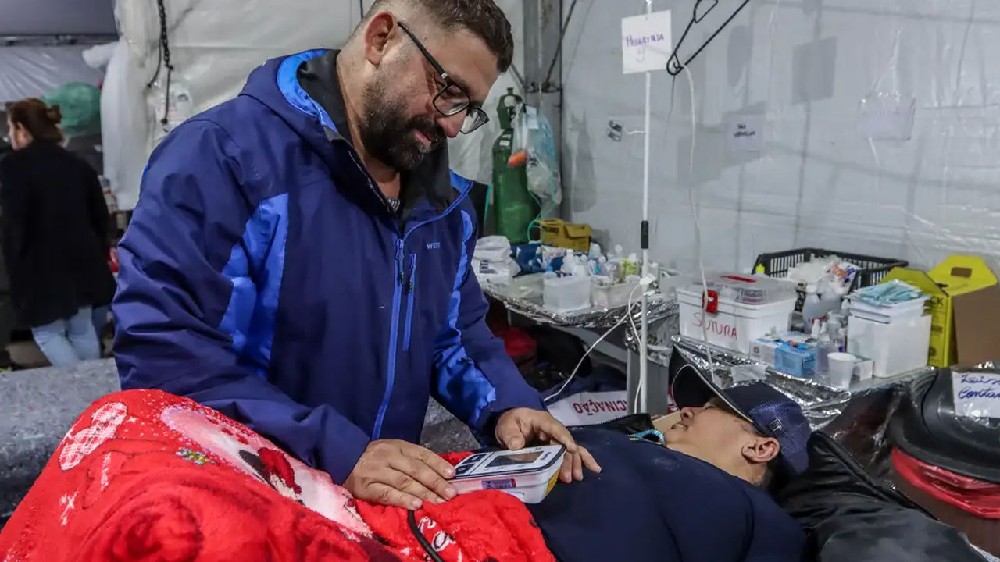
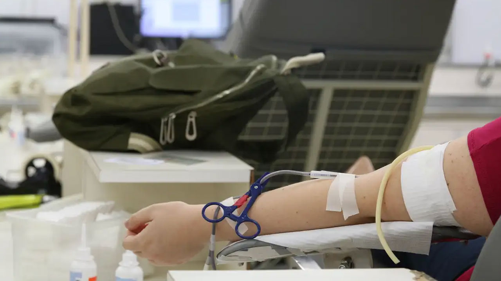
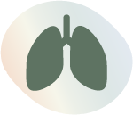
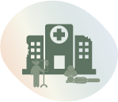

Os desastres intensivos e seus efeitos na saúde
Seja bem-vindo(a) à segunda aula do módulo II.
Na aula anterior deste módulo, você aprendeu a definir desastres intensivos e extensivos, diferenciando‑os pelas características de frequência e severidade. Além disso, conversamos sobre as causas naturais e antrópicas das inundações bruscas, enxurradas e deslizamentos. Também analisamos o cenário brasileiro desses desastres, identificando que eles vêm ocorrendo com periodicidade crescente e que regiões como Sul e Sudeste concentram a maior parte das enxurradas e deslizamentos. Destacamos ainda as responsabilidades e atuação da Atenção Primária à Saúde na gestão de riscos, abordando as fases de prevenção, preparação e resposta, bem como a necessidade de integração com a Vigilância em Saúde e a Defesa Civil.
Nesta aula, vamos conhecer as múltiplas categorias de impactos na saúde provocados por inundações bruscas, enxurradas e deslizamentos e como esses eventos afetam a infraestrutura e a capacidade de resposta do SUS. Ao final dela, você estará apto(a) para descrever os efeitos dos desastres intensivos sobre a saúde individual e coletiva.
Vamos lá?
Impactos dos desastres na saúde e no cuidado
Nesse momento, avançaremos para entender como esses desastres repercutem na saúde das pessoas e no funcionamento dos serviços de saúde, aprofundando a análise dos agravos e das estratégias de cuidado.
Impactos imediatos e lesões traumáticas

Inundações bruscas, enxurradas e deslizamentos provocam alagamentos, cortes, fraturas e outros traumas. Nos primeiros dias após um evento, emergências ficam abarrotadas de pessoas com lesões físicas. A força das águas e a queda de barreiras causam soterramentos e amputações. Esse tipo de agravo demanda respostas rápidas de primeiros socorros e encaminhamento cirúrgico.
Doenças infecciosas e surtos pós-desastre
A contaminação das águas e a destruição de redes de saneamento após enchentes favorecem doenças de veiculação hídrica (diarreias, hepatites A e E) e leptospirose. Áreas inundadas tornam-se criadouros de mosquitos, aumentando as arboviroses (dengue, Chikungunya, Zika). O Plano Setorial de Adaptação à Mudança do Clima do setor saúde – o AdaptaSUS – aponta que o acesso inadequado à água, saneamento e higiene é um dos principais riscos climáticos e causa cerca de um milhão de mortes por doenças infecciosas por ano, principalmente em crianças menores de cinco anos. Se não forem tomadas medidas rápidas de vigilância, notificação e controle, esses casos podem evoluir para surtos e epidemias em semanas após o desastre. Deve-se, ainda, ter atenção para evitar acidentes com animais peçonhentos.
No Brasil, a leptospirose é um relevante problema de saúde pública, especialmente em áreas urbanas. Chuvas e enchentes aumentam o risco de contaminação, podendo causar complicações graves e até morte quando não tratada adequadamente. O Campus Virtual Fiocruz oferece um curso online, autoinstrucional e gratuito sobre essa zoonose. Acesse o curso e conheça.
Doenças respiratórias, intoxicações e agravos ambientais

A lama e os escombros das inundações contêm fungos, bactérias e substâncias tóxicas que provocam pneumonias, crises asmáticas e alergias. Em alguns eventos foram registradas intoxicações por ingestão ou contato com produtos químicos (pesticidas, combustíveis), causando náuseas, vômitos, tonturas e convulsões. Além disso, o contato prolongado com água contaminada pode resultar em dermatoses e infecções cutâneas.
Saúde mental e problemas psicossociais
Perdas de parentes, destruição de moradias e meios de subsistência, deslocamentos forçados e a incerteza sobre o futuro desencadeiam transtornos de estresse pós-traumático, depressão e ansiedade.

No estudo de caso descrito no Guia de preparação e respostas do setor saúde aos desastres, meses após a inundação, foi observado o aumento de violência, depressão, insônia e ideação suicida entre moradores e profissionais de saúde. Por esse motivo, é essencial incluir apoio psicossocial nas estratégias de resposta.
Assista a seguir ao vídeo referente ao cuidado com a saúde mental das equipes de saúde.
O Ministério da Saúde direcionou para gestores e equipes da APS o documento “Inundações: diretrizes para profissionais de saúde: cuidados em saúde mental”. Ele apresenta orientações para o cuidado em saúde mental em situações de inundações e desastres, com foco na atuação das equipes da APS.
O documento “Inundações: diretrizes para profissionais de saúde: cuidados em saúde mental” aborda estratégias de acolhimento, escuta qualificada, manejo clínico, prevenção ao suicídio e fortalecimento das redes de cuidado e apoio comunitário. Seu objetivo é apoiar profissionais de saúde na oferta de um cuidado humanizado, integral e sensível às vulnerabilidades das populações afetadas. Acesse o documento.
Agravamento de doenças crônicas e interrupção de cuidados
Desastres interrompem o acesso a medicamentos, insumos e serviços. Usuários com hipertensão, diabetes, doenças renais e respiratórias descompensam quando perdem medicamentos ou não conseguem ir a consultas. Gestantes de alto risco, pessoas em tratamento de HIV/AIDS e pacientes em hemodiálise também são igualmente afetados, bem como os cuidados continuados na APS, como planejamento familiar e cuidados paliativos.

O Plano Setorial AdaptaSUS alerta que extremos climáticos podem inviabilizar o fornecimento de energia, comprometendo equipamentos vitais e armazenamento de vacinas, além de impossibilitar deslocamentos por estradas interrompidas.
Insegurança alimentar e desnutrição
Inundações e deslizamentos destroem plantações, estoques de alimentos e infraestruturas de abastecimento, provocando insegurança alimentar e nutricional.
O AdaptaSUS identifica esse tema como um dos principais riscos climáticos: populações de baixa renda, especialmente crianças e idosos, podem sofrer perdas de estatura, carências nutricionais e morte devido à falta de alimentação adequada. A ausência de saneamento agrava a desnutrição e aumenta a suscetibilidade a infecções.
A Nota Técnica Conjunta n. 56/2024 do Ministério da Saúde traz orientações para promoção, proteção e apoio à amamentação e à alimentação complementar saudável em situações de emergência, calamidade pública e desastres naturais. Ela destaca o papel da APS na garantia da segurança alimentar e nutricional de crianças menores de dois anos e no apoio às lactantes e suas famílias em contextos de vulnerabilidade. Além disso, reúne recomendações para o manejo seguro da alimentação infantil, prevenção do desmame precoce e fortalecimento do cuidado integral em situações de crise climática e humanitária. Acesse a Nota Técnica Conjunta.
Impactos nos serviços de saúde
Os serviços de saúde também sofrem consequências significativas.
touch_app CliqueToque em cada item a seguir e entenda.
Unidades de saúde podem ser inundadas, perder equipamentos e estoques ou ficar inacessíveis por vias interditadas. O Plano Setorial AdaptaSUS ressalta que os eventos climáticos extremos podem colapsar infraestruturas e interromper serviços quando faltam energia, água e acesso.
Emergências ficam superlotadas nos primeiros dias, enquanto profissionais também são afetados pelo desastre, reduzindo a força de trabalho.
Falta de combustível e de transporte impede a transferência de pacientes. A ausência de água tratada suspende hemodiálise e procedimentos cirúrgicos.
Prontuários físicos e digitais podem ser destruídos, dificultando o histórico de pacientes. Estoques de medicamentos e vacinas são perdidos por falta de refrigeração.
Entre as publicações do Ministério da Saúde para as equipes da APS em situações de desastres, está o manual “Inundações: diretrizes para profissionais de saúde: unidades básicas de saúde”, que busca orientar a atuação de gestores e equipe.
O manual “Inundações: diretrizes para profissionais de saúde: unidades básicas de saúde” aborda estratégias de planejamento, vigilância, cuidado integral e articulação em rede, com foco na resposta rápida e na proteção das populações vulneráveis. Além disso, apresenta recomendações práticas para prevenção, identificação e manejo dos principais agravos à saúde associados às enchentes. Acesse o manual.
Determinantes socioambientais e vulnerabilidades
A magnitude dos efeitos dos desastres intensivos está relacionada à interação entre os determinantes ambientais e sociais da saúde, as condições socioeconômicas, a exposição territorial e a capacidade de proteção e resposta das populações. A construção do risco socioambiental resulta, portanto, da combinação entre as ameaças climáticas e as condições de vida, trabalho, moradia e acesso a serviços e recursos de proteção. Além disso, fatores fisiológicos e condições de saúde podem aumentar a suscetibilidade e produzir efeitos mais intensos em pessoas com doenças crônicas, alterações cardiovasculares e respiratórias, comprometimentos imunológicos ou outras condições que reduzam a capacidade de adaptação do organismo.
Nesse contexto, estão mais expostas e em situação de vulnerabilidade as populações que vivem em áreas sujeitas a inundações, enxurradas e deslizamentos, como encostas, margens de rios e periferias urbanas. Somam-se a essas populações mulheres, crianças, idosos, pessoas com deficiência, pessoas com condições crônicas de saúde, gestantes, pessoas em situação de rua, comunidades indígenas e quilombolas, comunidades tradicionais e populações em situação de pobreza ou vulnerabilidade socioeconômica, dentre outras.
O AdaptaSUS enfatiza que ações de adaptação e resposta devem considerar equidade e justiça climática, incorporando conhecimentos e estratégias locais e evitando a perpetuação de desigualdades.
Integração APS e Vigilância em Saúde para mitigação
A APS e a Vigilância em Saúde devem trabalhar de forma integrada para prevenir, detectar e mitigar esses agravos. As ações incluem:
touch_app CliqueToque nos cards e arraste para ver as informações.
Desastres intensivos não se limitam à destruição material e seus efeitos perduram muito além do evento, exigindo um preparo robusto do SUS e, em especial, da APS.
A seguir, veja a síntese do que vimos aqui.
Lesões e mortalidade: Afogamentos, cortes, fraturas e traumas decorrentes de enchentes, enxurradas e deslizamentos; alta procura por atendimento emergencial nas horas iniciais.
Doenças infecciosas: Aumento de doenças de veiculação hídrica (diarreias, hepatites), leptospirose e arboviroses (dengue, Chikungunya, Zika) após contaminação das águas e proliferação de vetores.

Doenças respiratórias e intoxicações: Pneumonias, crises asmáticas e alergias devido ao contato com lama e fungos; intoxicações por produtos químicos (pesticidas, combustíveis) presentes nas águas.
Saúde mental: Transtorno de estresse pós-traumático, depressão, ansiedade, aumento de violência e ideação suicida meses após o desastre.
Agravamento de doenças crônicas: Descompensação de hipertensão, diabetes, doenças renais e respiratórias devido à interrupção de medicamentos, de acesso a serviços e perda de prontuários.
Insegurança alimentar e desnutrição: Destruição de plantações e estoques, escassez de alimentos, perdas de estatura e carências nutricionais entre crianças e idosos.

Impactos nos serviços de saúde: Danos diretos à infraestrutura (unidades inundadas, equipamentos destruídos), falta de energia e água, interrupção de atendimento e sobrecarga de emergências, problemas logísticos (falta de transporte, rotas bloqueadas) e perda de registros.
Nesta aula, vimos que os desastres provocam impactos amplos e prolongados na saúde, que vão desde lesões traumáticas imediatas e surtos de doenças infecciosas até o agravamento de condições crônicas, insegurança alimentar e sofrimento mental.
Além de afetarem diretamente a população, esses eventos comprometem a infraestrutura e o funcionamento dos serviços de saúde, exigindo respostas rápidas, planejamento logístico e integração entre APS e Vigilância em Saúde.
Compreender essa cadeia de efeitos é fundamental para fortalecer a capacidade de resposta da APS, reduzir vulnerabilidades e promover maior resiliência das comunidades diante das mudanças climáticas.